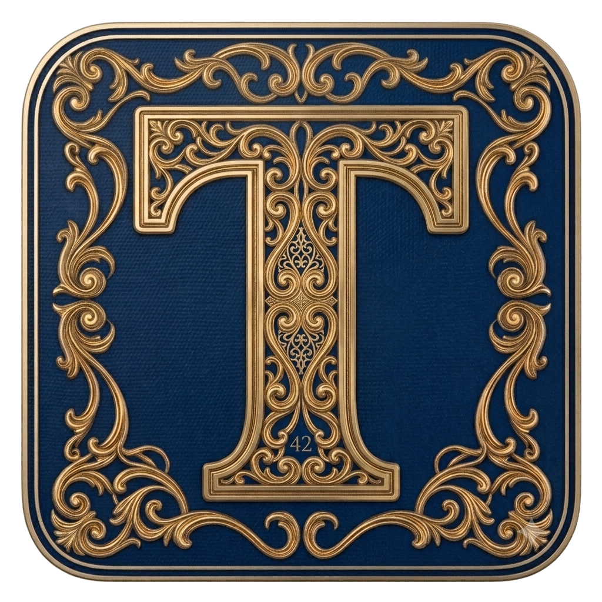

| # | Jugador | Pts | Dif |
|---|
Este documento constituye la norma suprema e irrefutable que rige el juego conocido por todos sus practicantes como TALMUT. Su redacción obedece a la necesidad histórica de fijar por escrito las reglas, tradiciones, leyes y sanciones que, habiendo surgido de manera orgánica a lo largo de incontables partidas, conforman hoy el cuerpo doctrinal vivo de este juego.
Ningún jugador, independientemente de su antigüedad, su racha de victorias o su vehemencia a la hora de argumentar, podrá invocar norma alguna que no esté contemplada en La Maltesa o en sus enmiendas posteriores debidamente ratificadas.
Este documento podrá ser ampliado mediante el consenso unánime de todos los jugadores habituales. Toda nueva ley deberá ser añadida al final del presente texto bajo el Artículo 9, con fecha y rúbrica de todos los asistentes.
1.1 Antes de que comience cualquier partida, y con independencia del número de rondas que se vayan a disputar, todos los jugadores presentes deberán tomar asiento alrededor de la mesa y proceder al juramento fundacional.
1.2 El ritual se ejecutará del siguiente modo: cada jugador extenderá la mano hacia el centro de la mesa. Las manos se apilarán una sobre otra, en señal de pacto colectivo. A continuación, todos los jugadores pronunciarán en voz alta y al unísono la fórmula sagrada:
1.3 El jugador que se niegue a participar en el juramento, lo pronuncie en voz inaudible o lo parodie de manera irrespetuosa recibirá una penalización de una carta adicional antes de comenzar la partida. Dicha carta no podrá ser mirada.
2.1 El jugador que abre la primera ronda de la partida será determinado por sorteo mediante una aplicación de azar instalada en un dispositivo móvil. Cada jugador colocará el dedo índice sobre la pantalla de manera simultánea, y la aplicación designará al elegido al azar.
2.2 En ausencia de dispositivo móvil, se repartirá una carta boca abajo a cada jugador. A la señal, todos voltearán su carta simultáneamente. El jugador con la carta de mayor valor será el jugador inicial. En caso de empate, se repetirá el proceso entre los jugadores empatados.
2.3 A partir de la segunda ronda, abrirá siempre el jugador que haya ganado la ronda anterior. El sorteo inicial solo se aplica en la primera ronda de cada partida.
2.4 El orden de turno de todos los jugadores será el de las agujas del reloj a partir del jugador que abre cada ronda.
2.5 El jugador que haya acumulado más puntos en la ronda anterior será el encargado de barajar y repartir las cartas en la ronda siguiente. En la primera ronda, baraja y reparte el jugador inicial determinado por sorteo.
3.1 El jugador designado como repartidor barajará el mazo completo. Otro jugador cortará el mazo. Se repartirán cuatro cartas a cada jugador, una a una y en orden, dejándolas boca abajo frente a cada participante.
3.2 Las cartas deberán quedar ordenadas según el criterio personal de cada jugador antes de proceder a la observación inicial.
3.3 Una vez recibidas y ordenadas las cuatro cartas, se realizará una cuenta regresiva colectiva: «3… 2… 1…». Al llegar a cero, cada jugador se inclinará hacia atrás y levantará simultáneamente dos de sus cuatro cartas para observarlas. El tiempo máximo de observación es de dos segundos. Transcurrido dicho tiempo, las cartas deberán ser devueltas boca abajo sin excepción.
3.4 Queda estrictamente prohibido volver a mirar las cartas propias durante el transcurso del juego salvo que una carta especial así lo permita. El jugador que mire sus cartas sin autorización recibirá una penalización de una carta adicional que no podrá ver.
4.1 En su turno, el jugador activo robará la carta superior del mazo y dispondrá de dos opciones:
Opción A — Quedarse la carta robada. El jugador incorpora la carta robada a su mano y descarta en su lugar una de sus cuatro cartas boca abajo, depositándola sobre el montón de descarte visible.
Opción B — Descartar la carta robada directamente. El jugador decide no conservar la carta robada y la deposita boca arriba sobre el montón de descarte. Si la carta pertenece a las cartas especiales contempladas en el Artículo 5, el jugador aplicará su efecto a continuación.
4.2 El Descarte Cruzado. Cuando un jugador descarte una carta, cualquier otro jugador que posea una o más cartas del mismo valor podrá descartarlas también de manera inmediata. Si el jugador posee dos cartas del mismo valor que la descartada, podrá descartar ambas. En caso de que dos o más jugadores deseen descartar simultáneamente, tendrá prioridad el primero en hacerlo de manera efectiva. La velocidad es ley.
4.3 El jugador que ejecute un Descarte Cruzado con una carta que no coincida con el valor en juego recibirá una penalización de una carta que no podrá ver.
4.4 La Ley de la Tortilla. Cuando un jugador robe una carta que coincida con el valor de una de sus propias cartas boca abajo y desee ejecutar un Descarte Cruzado consigo mismo, deberá hacerlo respetando la Ley de la Tortilla:
La carta robada y la carta descartada de la propia mano deben ser manipuladas con la misma mano y en un único movimiento continuo. Queda prohibido utilizar manos diferentes para depositar la carta robada y recoger la propia.
La razón de esta norma es preservar la dificultad y la emoción del Descarte Cruzado. La ejecución de la Tortilla con manos diferentes es una infracción y será penalizada con una carta que el infractor no podrá ver.
5.1 Las siguientes cartas tienen efectos especiales que solo se activan cuando el jugador las descarta directamente del mazo, depositándolas boca arriba. Si el jugador opta por incorporarla a su mano e intercambiarla por una de sus cartas boca abajo, el efecto no se aplica.
5.2 El DIEZ (10). El jugador puede mirar en secreto una de sus propias cartas boca abajo. Nadie más puede verla.
5.3 La JOTA (J). El jugador puede mirar en secreto una carta boca abajo de cualquier otro jugador. Solo el jugador que ejecuta el efecto puede verla. Al invocar este efecto es tradición pronunciar: «puedes mirar una a…JJJJJ…jena», remarcando con énfasis la J. Su omisión no es penalizable, pero estará mal vista por la comunidad.
5.4 La Q. El jugador que descarte una Q puede elegir entre dos modalidades de intercambio ciego: Modalidad 1: Intercambiar una de sus cartas boca abajo por una carta boca abajo de otro jugador, sin ver ninguna de las dos. Modalidad 2: Intercambiar una carta boca abajo de un jugador por una carta boca abajo de otro jugador distinto, sin ver ninguna.
5.5 La K. El jugador que descarte una K puede elegir entre dos modalidades: Modalidad 1: Mirar una carta boca abajo de otro jugador y, si lo desea, quedársela intercambiándola por una de sus propias cartas. Modalidad 2: Mirar una carta boca abajo de un jugador y, sin quedársela, transferirla a un tercer jugador distinto.
5.6 El JOKER. El JOKER es la carta más poderosa y más peligrosa del juego. Su valor es variable según el resultado de la ronda: si el jugador que porta el JOKER gana la ronda: vale −1 punto. Si el jugador que porta el JOKER no gana la ronda: vale +50 puntos.
6.1 Un jugador puede declarar TALMUT cuando considere que la suma de sus cuatro cartas es igual o inferior a cinco puntos. La declaración podrá realizarse en su turno, antes de robar carta o justo después de haber descartado.
6.2 La declaración de TALMUT es voluntaria. El jugador puede optar por no declararla aunque tenga cinco puntos o menos, si así lo considera conveniente.
6.3 Tras la declaración de TALMUT, cada jugador restante tendrá derecho a un turno más y solo uno. Concluido ese turno final, todos los jugadores voltearán sus cartas y sumarán sus puntos.
6.4 Durante la vuelta final tras la declaración de TALMUT, el jugador que la ha declarado conserva el derecho al Descarte Cruzado.
6.5 El TALMUT erróneo. Si el jugador que declara TALMUT voltea sus cartas y la suma supera los cinco puntos, incurrirá en la sanción más severa contemplada en La Maltesa: sumará a su marcador la puntuación de todos y cada uno de los demás jugadores en esa ronda.
6.6 El TALMUT automático. Si en el transcurso del turno un jugador descarta su última carta boca abajo, quedándose sin cartas sobre la mesa, se declarará automáticamente el TALMUT. El juego continuará con normalidad hasta que llegue de nuevo el turno del jugador en cuestión, momento en el que este deberá robar una carta del mazo y descartarla de inmediato sin poder quedársela. Acto seguido, comenzará la vuelta final para el resto de jugadores.
6.7 Intocable de Elliot Ness. Una vez un jugador ha declarado TALMUT —ya sea de manera voluntaria o automática—, queda investido de total inmunidad frente al resto de jugadores. Ninguna carta especial podrá ser ejecutada sobre su persona: no podrán mirarle cartas, intercambiarlas ni transferirle ninguna. El declarante es, a todos los efectos, intocable.
7.1 Valor de las cartas:
| Carta | Valor |
|---|---|
| A | 1 punto |
| 2 — 10 | Valor nominal |
| J | 20 puntos |
| Q | 30 puntos |
| K | 40 puntos |
| JOKER (ganador de ronda) | −1 punto |
| JOKER (no ganador) | +50 puntos |
7.2 Gana la ronda el jugador con la puntuación total más baja. El jugador ganador anota cero puntos en el marcador global. El resto anota su puntuación real de esa ronda.
7.3 En caso de empate entre el declarante de TALMUT y otro jugador, gana la ronda el que no declaró TALMUT. El declarante anotará su puntuación real.
7.4 La partida completa consta de diez rondas. Al finalizar cada ronda se anotan los puntos y se acumulan. Al término de la décima ronda, el jugador con la puntuación total más baja es el ganador. En caso de empate en la puntuación final, se jugará una ronda de desempate.
A efectos de La Maltesa, únicamente tendrá la consideración de partida oficial aquella que se dispute en su totalidad de diez rondas. Toda partida que no alcance dicho cómputo recibirá la denominación de Blue Lagoon y, si bien su resultado será celebrado con el honor y el regocijo que merece cualquier victoria, no generará efecto alguno sobre el histórico de la clasificación general.
El Blue Lagoon no existe para la historia. Solo para el ganador.
8.1 En consonancia con el juramento fundacional, todo error cometido durante el juego será penalizado. La penalización estándar consiste en recibir una carta adicional del mazo que el jugador infractor no podrá ver bajo ningún concepto. Cualquier jugador en la mesa puede señalar una infracción. No existe árbitro designado: la comunidad es el árbitro.
8.2 Tabla de infracciones:
| Infracción | Sanción |
|---|---|
| Juramento irrespetuoso o inaudible | Una carta de penalización antes de comenzar |
| Mirar cartas propias sin autorización | Una carta de penalización |
| Tortilla con manos diferentes | Una carta de penalización |
| Descarte Cruzado erróneo | Una carta de penalización |
| Robar carta fuera de turno | Una carta de penalización |
| TALMUT erróneo (más de 5 puntos) | Suma de los puntos de todos los demás jugadores en esa ronda |
9.1 La Maltesa es un documento vivo. Las leyes que con el paso del tiempo la comunidad de jugadores acuerde podrán añadirse bajo este artículo como enmiendas numeradas.
9.2 Cada enmienda deberá incluir: número de enmienda, fecha de aprobación, descripción clara de la nueva norma y la firma de todos los jugadores presentes en el momento de su aprobación. Ninguna enmienda podrá contradecir los principios fundamentales del Artículo 1.
9.3 En caso de disputa no contemplada en La Maltesa, la comunidad resolverá por votación. En caso de empate, prevalecerá la interpretación más perjudicial para el jugador que haya cometido el error. Porque:
El presente documento ha sido redactado con plena autoridad y rigor
para que jamás pueda alegarse ignorancia ante el error cometido en la mesa.